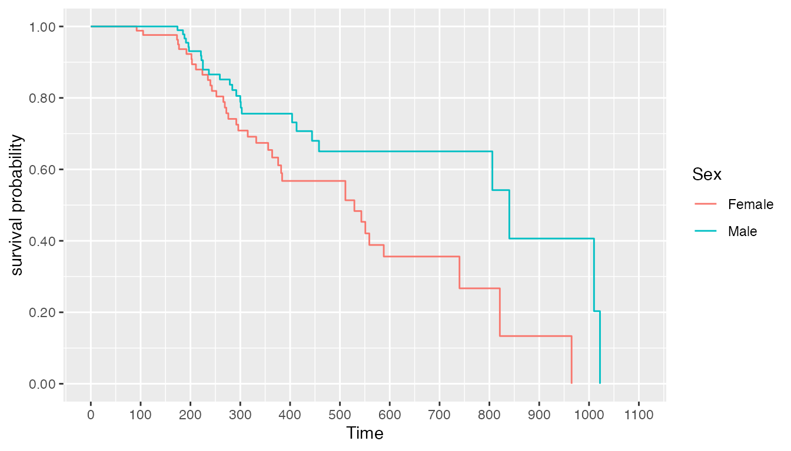
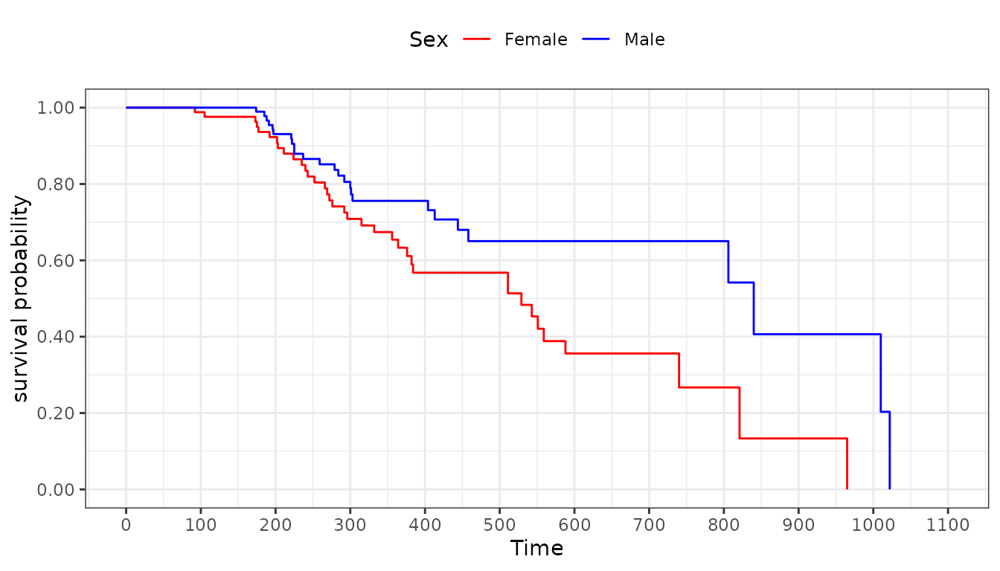
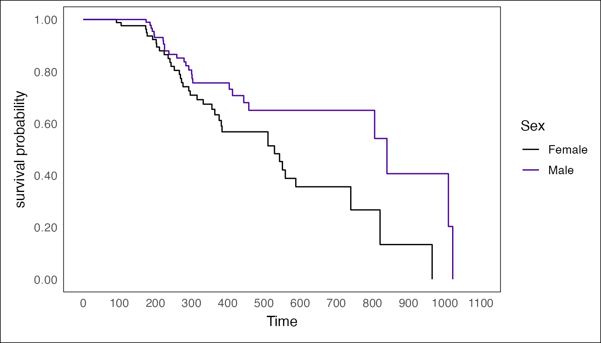
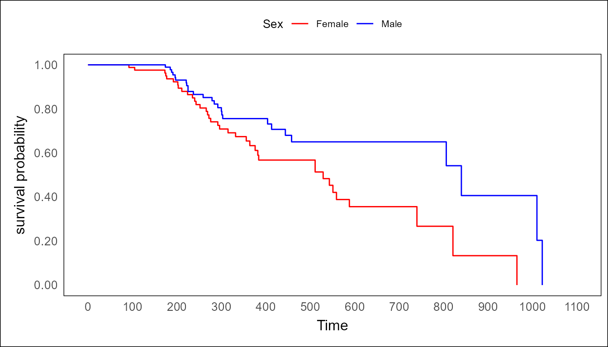

Introduction
This tutorial illustrates the usage of the styling function that
visR provides. By default, visR::visr() does
not apply any form of visual changes to the generated survival plots.
Therefore, the default output looks like you would expect from a
standard ggplot2::ggplot() plot. While the examples below
visualize the results from estimate_KM(), these principles
apply to competing risks cumulative incidence objects created with
estimate_cuminc() as well.
Preparation of the data
In this example, we will work with patient data from NCCTG Lung
Cancer dataset that is part of the survival package. This
data is also used to demonstrate more functions of visR in
another vignette. However, in this particular one, it will only be used
to demonstrate the adjustments of the aesthetics.
Generation of a survfit object
lung_cohort <- survival::lung
lung_cohort <- lung_cohort %>%
dplyr::mutate(sex = as.factor(ifelse(sex == 1, "Male", "Female"))) %>%
dplyr::mutate(status = status - 1) %>%
dplyr::rename(Age = "age", Sex = "sex", Status = "status", Days = "time")
lung_suvival_object <- lung_cohort %>%
visR::estimate_KM(strata = "Sex", CNSR = "Status", AVAL = "Days")
#> Warning: `estimate_KM()` was deprecated in visR 0.4.0.
#> ℹ Please use `ggsurvfit::ggsurvfit()` instead.
#> This warning is displayed once every 8 hours.
#> Call `lifecycle::last_lifecycle_warnings()` to see where this warning was
#> generated.Styling
Plotting the generated survfit object without
adjustments
p <- lung_suvival_object %>%
visR::visr()
#> Warning: `visr.survfit()` was deprecated in visR 0.4.0.
#> ℹ Please use `ggsurvfit::ggsurvfit()` instead.
#> This warning is displayed once every 8 hours.
#> Call `lifecycle::last_lifecycle_warnings()` to see where this warning was
#> generated.
p
As we can, the plot shows the default ggplot2::theme_grey()
style with a grey background, a visible grid and the default
ggplot2 colours.
Using ggplot2 to style the plot
Since visR::visr() also generates a valid
ggplot object as an output, we can use the conventional
styling logic and options that ggplot2 provides, as shown
below.
p +
ggplot2::theme_bw() +
ggplot2::theme(legend.position = "top") +
ggplot2::scale_color_manual(values = c("red", "blue"))
However, visR also provides functions to adjust common
aesthetics more easily and with less code.
Using visR to style the plot
The most direct option to style plots generated through
visR::visr() is by using the parameters that the function
provides. Internally, parameters like the y-axis label are automatically
deducted from the used function. The following example demonstrates the
options exposed.
lung_suvival_object %>%
visR::visr(x_label = "Time",
y_label = NULL, # NULL (default) causes the label to be deducted from the used function
x_ticks = seq(0, 1200, 200),
y_ticks = seq(0, 100, 20),
fun = "pct",
legend_position = "top") 
However, these rather minimal adjustments usually don’t cover all the
things a user wants to modify. Therefore, we provide two additional
functions to adjust more aesthetics: visR::define_theme()
and visR::apply_theme(). The first one provides an easy
wrapper to create a nested list of list with styling options that is
then applied to the plot by the second function.
New themes
Defining a visR_theme using
visR::define_theme()
If no further options are provided to
visR::define_theme(), it nonetheless returns a very minimal
list of reasonable defaults.
visR::define_theme()
#> $fontfamily
#> [1] "Helvetica"
#>
#> $grid
#> [1] FALSE
#>
#> $bg
#> [1] "transparent"
#>
#> attr(,"class")
#> [1] "visR_theme" "list"However, this function also takes several other styling options. The currently usable ones are displayed below. One particular use that we had in mind when writing this function was, that we wanted to have the option to define the different colours for the strata once and then to not have to worry about all of them being present.
theme <-
visR::define_theme(
strata = list(
"Sex" = list("Female" = "red",
"Male" = "blue"),
"ph.ecog" = list("0" = "cyan",
"1" = "purple",
"2" = "brown")
),
fontsizes = list(
"axis" = 12,
"ticks" = 10,
"legend_title" = 10,
"legend_text" = 8
),
fontfamily = "Helvetica",
grid = list("major" = FALSE,
"minor" = FALSE),
#grid = TRUE/FALSE # <- can also be used instead of the named list above
bg = "transparent",
legend_position = "top"
)Apply styling using visR::apply_theme()
The visR::apply_theme() function exposes the user to two
ways to style their plot. The most direct one would be to just apply the
function to a plot without specifying any options. This applies several
reasonable defaults to the plot.
lung_suvival_object %>%
visR::visr() %>%
visR::apply_theme()
The second one would be to apply a nested list of lists to, ideally
generated through visR::define_theme() to a plot. This
serves the purpose to generate a detailed visR_theme object
once and then apply it to one or several plots with a single line. These
lists could then also be easily saved and shared. The usage of the theme
generated above is shown below.
lung_suvival_object %>%
visR::visr() %>%
visR::apply_theme(theme)